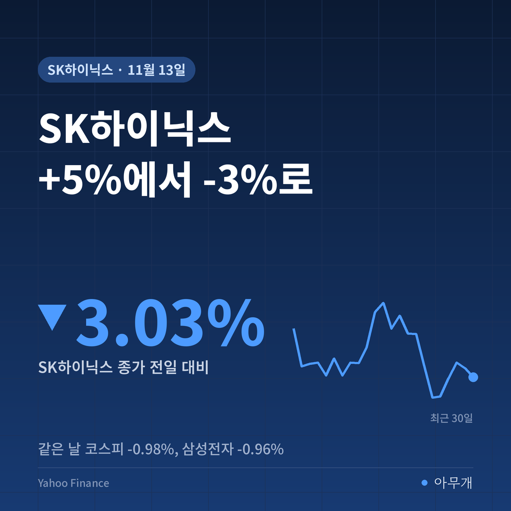
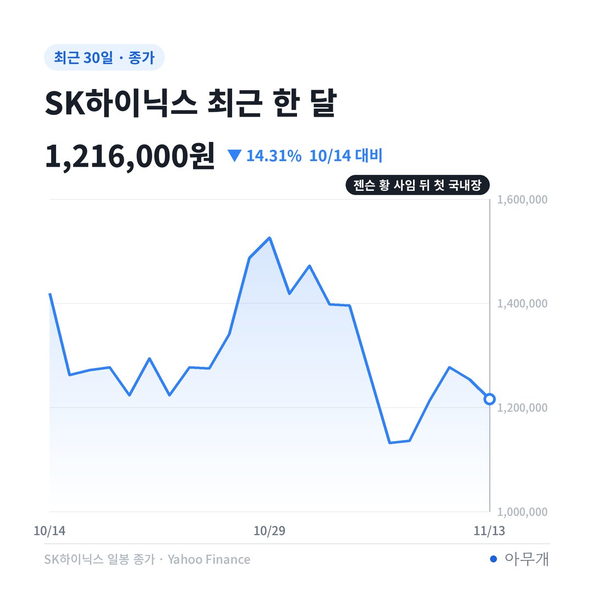
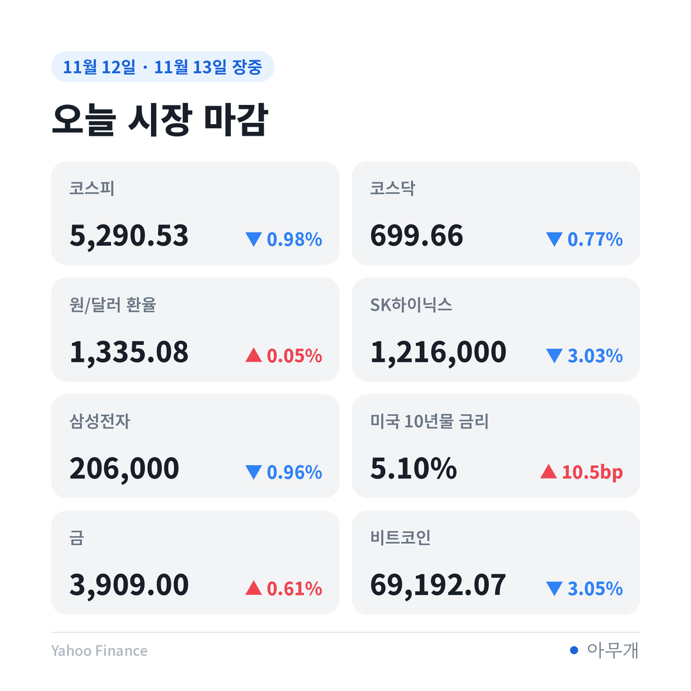
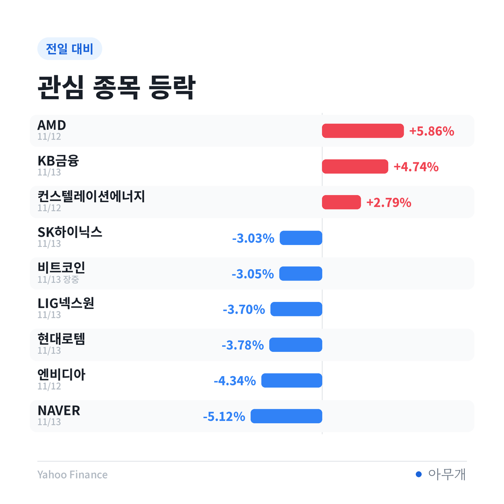

📷 사진 1 자리
아침에 던진 질문의 답
오늘 아침 글은 질문 하나로 끝났어요. 밤사이 뉴욕에서 3.19% 빠진 SK하이닉스 미국주식예탁증서(ADR)를 국내 주가가 따라갈까[4]. 답은 '처음엔 정반대로, 끝에는 거의 그대로'였어요.
📷 사진 2 자리
| 시각 | SK하이닉스 | 무슨 일이 있었나 |
|---|---|---|
| 개장 | 1,292,000원(+3.03%) | 젠슨 황 사임을 엔비디아 한 회사의 문제로 보는 해석에 매수 유입[1][3] |
| 개장 직후 | 1,317,000원(+5.02%) | 하루 고점. 코스피도 장 초반 2.5% 올라[3] |
| 오전 | - | 코스피 장중 2%대 상승, 외국인 순매수[5] |
| 오후 2시 30분 전후 | 1,201,000원(-4.23%) | 하루 저점. 앨리스 황 관련 보도가 국내에 퍼짐[1] |
| 마감 | 1,216,000원(-3.03%) | 외국인 순매도로 돌아섬[1][2] |
종가만 보면 ADR 하락폭(-3.19%)과 비슷해요. 그런데 하루 고점에서 보면 7.67%를 내준 셈이에요. 삼성전자도 216,000원(+3.85%)까지 갔다가 206,000원으로 끝나 고점 대비 4.63% 밀렸어요[1].
CEO 사생활 문제가 주가를 얼마나 흔드는지는 연구가 있어요. 1978~2011년 미국 상장사 경영진 스캔들 325건을 추적한 연구에서 성적 일탈은 주가 충격이 1% 안팎으로 가장 작았어요[6]. 다만 당사자가 CEO이고 '거짓말'이 얽힌 경우는 4% 넘게 빠졌고, 1년 새 기업 가치 12~14%가 사라졌어요[6]. 오늘 오후 장은 이번 일이 앞쪽(사생활)인지 뒤쪽(신뢰 문제)인지를 다시 따져 본 시간이었어요.
오전엔 사고 오후엔 판 이유
| 구분 | 내용 |
|---|---|
| ✅ 사실 | 싱가포르 정부가 앨리스 황의 재입국을 막았다고 발표[7] |
| ✅ 사실 | 싱가포르는 서버 수출 사기 사건으로 메가스피드 등을 조사 중. 서버가 말레이시아를 거쳐 다른 나라로 갔는지 확인 중[7] |
| ⚠️ 의혹 | 앨리스 황의 중국 정보기관 연계. 미국 정보당국이 의심한다는 보도[7][8] |
| ⚠️ 의혹 | 수출 금지 칩을 중국으로 빼돌리는 데 관여했다는 의혹[8] |
| ⚠️ 의혹 | 딥시크에 블랙웰 칩을 대기 위한 158억 달러 투자 유치 관여. 대신증권 연구원이 '의혹이 제기됐다'고 전함[1] |
| 🗣️ 회사 입장 | 하비 존스 이사회 의장, 운영·고객 약속·제품 로드맵은 차질 없이 이어진다고 밝힘[8] |
오전의 논리는 단순했어요. 사람이 바뀌어도 AI 칩 수요는 그대로라는 해석이었죠[1]. 오후에 흔들린 건 이 의혹들이 사생활이 아니라 수출 규제, 곧 공급망 문제로 번질 수 있다는 점이에요.
엔비디아에 HBM(고대역폭 메모리)을 많이 대는 SK하이닉스가 삼성전자보다 크게 빠진 것도 이 맥락이에요[1]. 수출 통제가 세지면 엔비디아의 중국 쪽 판매가 줄고, 그만큼 메모리 주문도 영향을 받을 수 있어요.
반도체 밖에서 온 압력
주가가 밀린 이유가 엔비디아만은 아니었어요.
📷 사진 3 자리
| 지표 | 값 | 변화 |
|---|---|---|
| 미국 2년물 금리 | 4.862%(12일) | 4거래일 +38.8bp, 4년5개월 만의 최대폭[9] |
| 미국 10년물 금리 | 5.103%(12일 종가) | +10.5bp |
| 미국 10년물 금리(13일 아시아 시간) | 5.125% | 다시 5% 위[1][10] |
| 원/달러 환율(15:30) | 1,336.7원 | +6원[10] |
| 브렌트유(12일) | 95.82달러 | +3.3%[10] |
| 코스피 | 5,290.53 | -0.98% |
미국 2년물 금리는 연준 금리 전망에 가장 민감한 숫자예요. 10월 물가·고용 지표가 예상보다 높았고, 연준 이사 한 명이 12월 0.5%포인트 인상 가능성까지 내비치면서 4거래일 만에 38.8bp(0.388%포인트) 뛰었어요[9]. 여기에 트럼프 대통령이 이란과 합의할 필요가 없다는 쪽으로 기조를 바꾸면서 유가가 올랐어요[1][11].
금리가 오르고 달러가 강해지면 외국인은 보통 덩치 큰 종목부터 줄여요. 오늘 외국인 순매도 5,475억원 가운데 전기·전자 업종이 5,073억원, 약 93%였어요[1]. 개인은 174억원, 기관은 21억원 순매수에 그쳐 받아 줄 손이 작았어요[1].
국내 투자자에게는: 환전과 대출 금리까지
코스피는 1주 기준으로는 아직 +4.56%예요. 1달 기준으로는 -11.95%라, 지난주 반등분 일부를 내준 하루로 볼 수 있어요. SK하이닉스도 1주 +7.42%, 삼성전자 +9.17%로 이번 주 상승분이 남아 있어요.
📷 사진 4 자리
지갑 쪽 숫자도 움직였어요. 원/달러 환율은 4거래일 연속 1,330원대에 머물러 달러 환전 부담이 줄지 않았어요[10]. 국고채 금리도 일제히 올라 3년물이 장중 3.756%를 찍었어요[12]. 대출 금리는 시장 금리를 따라가기 때문에, 미국 금리 상승이 국내 대출 금리로 번지는지 볼 필요가 있어요.
정부 쪽에서는 오늘 자본시장 간담회에서 증시안정펀드 가동 제안이 나왔어요. 이억원 금융위원장은 증안펀드는 한시적이고 예외적인 수단이라며 신중한 입장을 밝혔어요[13]. 당장 시장에 돈이 들어오는 장치는 아니라는 뜻이에요.
다음 주까지 갈릴 세 갈래
| 시나리오 | 무엇을 보면 되나 | 예상되는 영향 |
|---|---|---|
| 의혹이 회사 문제로 번지지 않음 | 엔비디아 실적 발표와 임시 CEO의 공급 계획 설명 | 오전의 '개별 위험' 해석이 돌아오고 반도체 매도가 줄 수 있음 |
| 수출 통제 강화로 번짐 | 미국 의회 법안, 싱가포르·미국 당국 조사 결과 | 엔비디아 중국 매출 감소 우려가 HBM 공급사로 이어질 수 있음 |
| 금리가 더 큰 변수 | 미국 2년물 금리, 원/달러가 1,330원대를 벗어나는지[10] | 엔비디아 소식과 상관없이 외국인 대형주 매도가 이어질 수 있음 |
오늘 장은 엔비디아 뉴스와 금리, 두 가지가 겹친 날이에요. 외국인 매도의 대부분이 전기·전자에 몰린 걸 보면 반도체 공급망 경계가 더 컸다고 봐요. 오전과 오후의 차이를 만든 것도 금리가 아니라 의혹 보도였으니까요.
✍️ 직접 보거나 들은 경험이 있으면 위 문단에 한두 줄 덧붙이세요 (이 안내 줄은 지우기)
반대 시각도 충분히 설득력 있어요. 금리가 오르고 달러가 강할 때 외국인이 가장 먼저 줄이는 건 원래 비중이 큰 반도체예요. 그렇다면 업종 집중은 엔비디아 탓이라기보다 늘 그렇듯 덩치 순서대로 판 결과일 수 있어요. 미국 2년물이 4년5개월 만에 가장 빠르게 오른 주였다는 점도 가볍지 않아요.
달력에 적을 것
참고한 기사
이 글은 정보 제공 목적이며 투자 권유가 아닙니다. 투자 판단과 책임은 본인에게 있습니다.
시장 수치: Yahoo Finance 종가 기준(국내 장중 고가·저가와 수급은 연합뉴스, 원/달러는 15:30 기준가)



